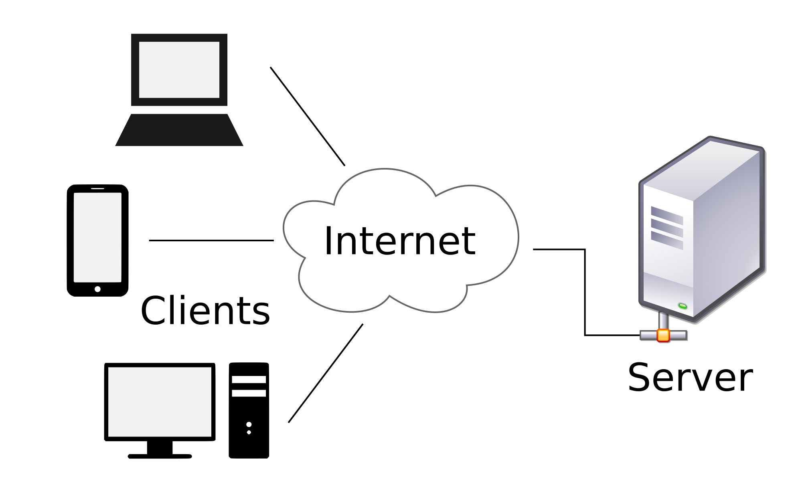
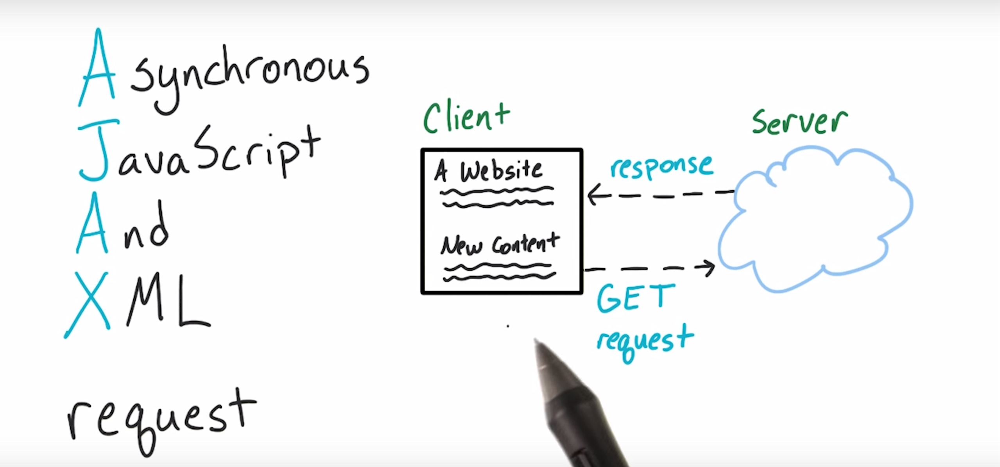
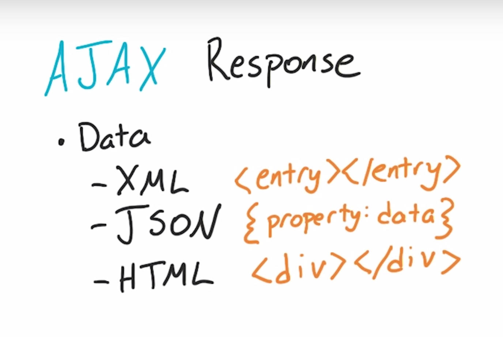

클라이언트 & 서버 네트워크


- 동기방식(sync) : 서버에 신호를 보냈을 때 응답이 돌아와야 다음 작업을 수행. (ex. 링크클릭 )
- 비동기방식(async) : 신호를 보냈을 때 응답 상태와 상관없이 다음 동작을 수행. (ex. 자동완성 )

(xml과 json 구조)
목적 : 화면전환없이 클라이언트 측과 서버 측간의 데이터(XML, JSON, HTML 등)을 교환하기 위함.
-> 방문객이 보는 컴퓨터에서 서버에 자료를 요청할때 화면 전환 없이 요청한 자료를 전송
* 페이스북에서 AJAX 확인하기
NEXT